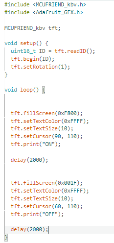
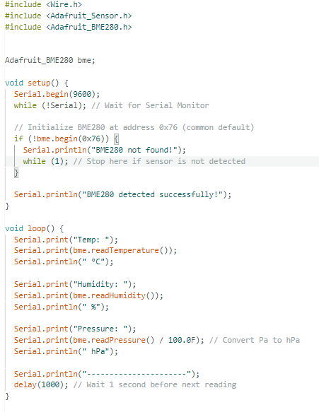
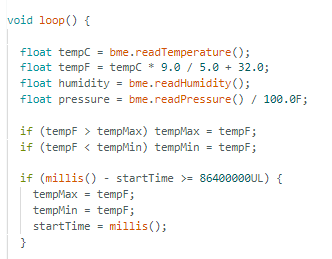
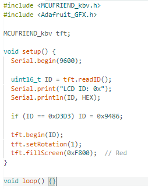
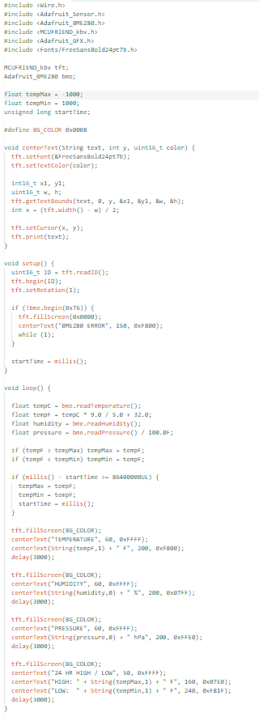
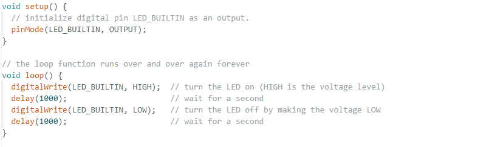
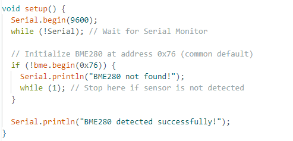

Description
This project is an Arduino-based weather station that measures and displays temperature, humidity, barometric pressure, and the maximum and minimum temperature in real time. The device uses a BME280 sensor to collect data and outputs readings to a TFT display shield mounted on an Arduino Mega. All components are housed in a custom-designed, 3D-printed enclosure created using Fusion 360 and printed on a Bambu printer. A successful project displays accurate, live environmental data in a clear, readable format within a clean, fully enclosed case.
Inspiration & Attribution
How This Project Differs From the Source
- Basic 16x2 LCD shield
- All readings shown simultaneously
- Celsius output only
- No max/min tracking
- No enclosure
- Published 2017
- 3.5" TFT color display (2× screen area)
- Cycles one reading every 3 seconds
- Fahrenheit output
- Max/min tracking with 24hr reset
- Custom Fusion 360 enclosure, 3D printed
- Fully rewritten display code
Design Considerations
This project is a personal indoor weather station designed to measure and display real-time temperature, humidity, and barometric pressure. It is built for personal use and was completed as an individual project. The device is intended for indoor use and is portable, as it only requires a USB power source. It does not connect to the Internet or use Bluetooth. The enclosure was fabricated using a 3D printer; no vinyl cutter, laser cutter, or CNC machine was used. The project is powered by an Arduino Mega. Inputs come from a BME280 environmental sensor; outputs are displayed on a 3.5" TFT color display.
The inspirational tutorial was published in 2017 on Instructables and remains available with current, accessible parts. Total spending came to approximately $55–60, within the $75 maximum. The enclosure measures approximately 5" long, 4" high, and 2" wide. Materials used include an Arduino Mega, BME280 sensor, TFT display shield, jumper wires, solder, and PLA filament. All tools required — soldering iron, calipers, and 3D printer — are found in the Fab Lab. Electronics are concealed within the custom 3D-printed enclosure, with only the display visible through the front opening.
Instructions
Materials / Bill of Materials
View Full BOM Spreadsheet ↗| # | Description | Vendor | Part No. | Qty | Cost |
|---|---|---|---|---|---|
| 1 | Arduino Mega with USB Cable | Amazon | B01H4ZLZLQ | 1 | $22.99 |
| 2 | BME280 Temperature, Humidity & Pressure Sensor (5V) | Amazon | B0DHPCFXCK | 1 | $11.99 |
| 3 | 3.5" TFT Display Shield | Amazon | B0DLMV7NTK | 1 | $18.49 |
| 4 | Jumper Wires | — | — | — | — |
| 5 | 3D Printer Filament (PLA) | — | — | — | — |
| 6 | Soldering Tools & Solder | — | — | — | — |
| Total | $53.47 | ||||
Tools & Equipment
Software Tools
Arduino IDE was used to write, test, and upload all code to the Arduino Mega. Fusion 360 was used to design the custom 3D-printed enclosure, with calipers used to take precise measurements before modeling. Bambu slicer software prepared and sent print files to the Bambu printer. GitHub managed version control and stored all project files. Flint AI verified BOM parts against tutorial requirements. ChatGPT assisted with troubleshooting code and display issues throughout the project.
Hand Tools & Fab Lab Equipment
A soldering iron was used to solder header pins onto the BME280 sensor. Calipers measured component dimensions for accurate enclosure design. A Bambu 3D printer fabricated all enclosure parts. A laptop handled all software work, coding, and file management. A breadboard was used during early testing phases only.
Arduino Code Files
Design & Print Files
Fusion 360 Files
- first_test_print_Ben.f3d
- first_test_print_Ben_4.f3d
- first_test_print_Ben_7.f3d
- first_test_print_Ben_8.f3d
- first_test_print_Ben_9.f3d
- first_test_print_Ben_10.f3d
STL Files
Process & Documentation
Project Summary
The weather station project began with a research phase in early January, during which project options were evaluated, a task analysis was completed, a Gantt Chart was developed, and a Bill of Materials was assembled with AI-assisted part verification. Code development followed, with libraries installed, test code written for the sensor and display individually, and a combined working version produced with features including cycling measurements, Fahrenheit output, and a 24-hour max/min temperature reset. When parts arrived in late January, soldering the header pins onto the BME280 sensor was required before testing could begin. The most significant setback came in early February when the original 3.5" TFT display proved incompatible with the Arduino Mega, requiring a replacement to be ordered; the new display then introduced a pin conflict with the sensor, which was resolved through code rewrites. With all electronics functioning together by mid-February, attention shifted to the enclosure. Six iterations of a custom case were designed in Fusion 360, printed on a Bambu 3D printer, and refined over two weeks. The project concluded in early March with final assembly, documentation, and upload of 80+ files to GitHub.
Original Plan
The project was organized into nine sequential phases. It began with planning — selecting the project, completing a task analysis, building a Gantt Chart, researching parts, and finalizing the BOM. From there, the focus shifted to hardware: wiring the components, writing test code to verify everything functioned correctly, and resolving any sensor or display issues that emerged. Once the hardware was confirmed working, the next steps were soldering the connections and developing the full code, covering temperature, humidity, air pressure, and max/min tracking. The final phases covered the enclosure — researching and brainstorming design options, modeling and 3D printing the case in Fusion 360 — before concluding with error fixes and the creation of a final presentation.
How the Project Evolved
The project followed the overall structure of the plan but deviated in a few key areas. Parts took longer to arrive than anticipated, delaying the physical build phase. A major unplanned setback occurred when the original TFT display failed to work with the Arduino Mega, requiring a replacement to be ordered and adding roughly a week of unplanned troubleshooting time. Similarly, the 3D printing phase extended beyond the planned window, requiring nine printed iterations through early March rather than concluding by February 23. The error-fixing phase effectively merged with the printing phase as enclosure issues were identified and resolved simultaneously. Despite these delays, the presentation and final documentation were completed on time by March 4.
Important Decisions
Early on, the Arduino Mega was swapped out for an Arduino Uno since the project required only a few ports, making the simpler board a more practical choice. The display was upgraded from a basic LCD to a 3.5" TFT color screen because it offered significantly better readability and visual quality. When the original TFT display proved incompatible with the Arduino Mega, the decision was made to order a replacement rather than continue troubleshooting an unsolvable hardware conflict — accepting the delay in order to keep the project moving forward. When the new display blocked the original sensor's pins, a second replacement sensor was ordered, this time a 5V version compatible with the remaining available ports. The interface was redesigned to cycle through one measurement at a time every three seconds to keep the screen clean and readable. Max/min temperature tracking with a 24-hour reset was added to increase the practical usefulness of the device. Finally, the decision to design a custom enclosure from scratch in Fusion 360 was made to produce a finished, professional-looking product.
Daily Journal
Joined the classroom and researched possible project options. Top candidates included a phantom chessboard, home automation intruder alarm, online security camera, GPS/SMS call box, and a weather station display.
Selected the weather station as the final project and began the task analysis.
Completed the task analysis and started building the Gantt Chart.
Finished the Gantt Chart.
Began researching required parts and started drafting the Bill of Materials.
Completed the BOM. Used Flint, an AI tool, to verify that selected parts matched the tutorial requirements — this process identified a better sensor option than originally listed.
Began writing test code for the breadboard setup. Installed the Adafruit BME280 and LiquidCrystal libraries, and configured a GitHub repository on both school and home computers.
Finished the template testing code and began customizing it for the new display using AI assistance.
Revised the code to add max/min temperature tracking and redesigned the display to cycle through one measurement at a time, switching every three seconds. The max/min resets automatically every 24 hours. Also created separate test files for the display and sensor, then combined them into a single unified test.
Ordered parts. Switched from the Arduino Mega to an Arduino Uno since only a few ports were needed, and wrote new test code for it.
Converted all code from the Arduino Mega to the Arduino Uno and found inspiration for the enclosure design online.
Parts arrived. Tested the Arduino Uno and ran the sensor code, but encountered an error where the sensor was not detected. Determined that the header pins needed to be soldered before testing could proceed.
Soldered header pins onto the BME280 sensor and wired it to the breadboard — GND to ground, VCC to power, SDA to A4, and SCL to A5. Switched back to the Arduino Mega and moved SDA and SCL to their dedicated pins; the code continued to work. Connected the display shield and powered it on successfully.
Ran test code for the display. The screen powered on but did not respond to any commands.
Continued troubleshooting the display without success. Researched the issue on Arduino forums and used ChatGPT for additional help, ultimately concluding that the display was incompatible with the Arduino Mega. Decided to order a replacement. Updated the code to output Fahrenheit and refined the max/min reset logic.
Ordered a replacement display shield and continued troubleshooting the original without resolution. Researched potential enclosure designs.
The new display arrived, powered on, and ran code successfully — however, its pin layout blocked the ports needed for the sensor.
A new 5V sensor arrived, but the pin conflict with the display shield persisted. Used AI assistance to rewrite the code and work around the issue.
Successfully got the sensor and display working together. Refined text size and color settings with AI assistance. Began taking measurements for the enclosure.
Completed all enclosure measurements using calipers, began designing the case in Fusion 360, and sent the first print to the Bambu printer.
Received the first print. Printed on the wrong side, requiring supports that damaged the surface; walls were too thin. Cable hole and overall fit were functional. Next steps: increase wall thickness, improve display opening, reorient to eliminate supports.
Updated design with thicker walls, better electronics coverage, and correct print orientation. Added a sliding rail mechanism to allow a back panel to close the case.
Designed the top sliding piece using measurements copied from the bottom piece. First attempt was slightly too large; adjusted measurements and reprinted both pieces together.
Sliding mechanism worked well, but the bottom piece was slightly oversized, allowing the display to shift. Corrected the cable hole position and reduced the bottom piece by 0.3 inches.
Received the updated print. The cable hole was slightly off, lowered by approximately 0.1 inches and another print started.
Received the final print. Cable fits well; display sits noticeably flatter. Noted temperature reading rose 7° after 30 minutes — likely heat from enclosed electronics. Uploaded 80 files to GitHub, converting photos from HEIC to JPEG and videos from MOV to MP4.
Completed final documentation photos, created a presentation slideshow, and built a GitHub website to host all project files and documentation.
Project Images




Case Development
First Prototype


Second Prototype


Fourth Prototype


Fifth Prototype


Seventh Prototype


Eighth Prototype


Ninth Prototype

Case Issues & Adjustments


Sensor Testing



Temperature Conversion



Sensor + Display Integration


Code Development




Fusion 360 Design


Project Videos
Presentation Slides


Mistakes & Solutions
Mistakes
Several mistakes occurred throughout the project that required correction. The first major error was ordering the wrong Arduino board — the Mega was initially selected but later replaced with the Uno when it became clear fewer ports were needed, resulting in wasted time rewriting code. When the original TFT display arrived and failed to work with the Mega after several days of troubleshooting, it became clear the two were simply incompatible — a compatibility check that should have been done before ordering. When the replacement display arrived, its pins blocked the sensor connections, requiring a second sensor to be ordered. On the hardware side, the sensor headers were not soldered before initial testing, causing a detection error that halted progress. In the enclosure design phase, the first print was oriented incorrectly, requiring supports that damaged the surface, and the initial wall thickness was too thin. Subsequent iterations had misaligned cable holes and imprecise tolerances that needed incremental corrections across several more prints.
Solutions
Each challenge was resolved through a combination of research, AI assistance, and iterative testing. The Arduino board mismatch was corrected by switching to the Uno and rewriting the code to match its pin configuration. When the original display proved incompatible with the Mega, a replacement was ordered after using ChatGPT to confirm the root cause. The pin conflict between the new display and the sensor was resolved by ordering a 5V BME280 compatible with the remaining open ports. Soldering the header pins onto the sensor resolved the detection error immediately. Enclosure problems were addressed through systematic iteration — each print was examined, specific measurements were corrected in Fusion 360, and a new version was printed until the fit, wall thickness, cable routing, and sliding mechanism all met the required standard. Throughout the project, GitHub ensured that working code was always backed up before changes were made.
Reflection
This project made clear that building a functional hardware device requires far more than following a tutorial. The technical skills developed throughout — writing and troubleshooting Arduino code, soldering, CAD modeling in Fusion 360, and 3D printing — all grew significantly through the process. More than any individual skill, the project demonstrated how much of engineering involves responding to unexpected problems. The display incompatibility, pin conflicts, and enclosure iterations were not part of the original plan, but working through each one produced the most important learning of the entire project.
Managing a project of this scale required consistent organization and planning. Maintaining a Gantt Chart and breaking the work into smaller phases was essential to staying on track. By dividing the project into manageable pieces, it became easier to identify where problems were occurring and what was working. When setbacks arose, having a record of decisions made and steps already attempted made it significantly easier to determine the right path forward.
On a personal level, this project built confidence in the ability to work through difficult problems independently. There were multiple points where issues arose unexpectedly, particularly during the display troubleshooting phase. A key takeaway was that there are many resources available when problems occur — AI tools, online forums, and the work of others in the maker community all played an important role in finding solutions. The finished project is something to be proud of — it looks professional, functions as intended, and turned out better than what was originally envisioned.
Looking ahead, several improvements would strengthen the project further. Adding ventilation holes around the BME280 sensor would allow better airflow and improve measurement accuracy, as heat from the enclosed electronics was observed to raise the temperature reading noticeably after extended use. Tighter enclosure tolerances would reduce display movement. The interface also has room to improve — unused screen space could be filled with larger text and more refined colors. The most significant next step would be adding Wi-Fi connectivity via an ESP8266 module, enabling the station to log environmental data over time and push readings to a web dashboard — transforming it from a standalone display into a fully networked monitoring tool.